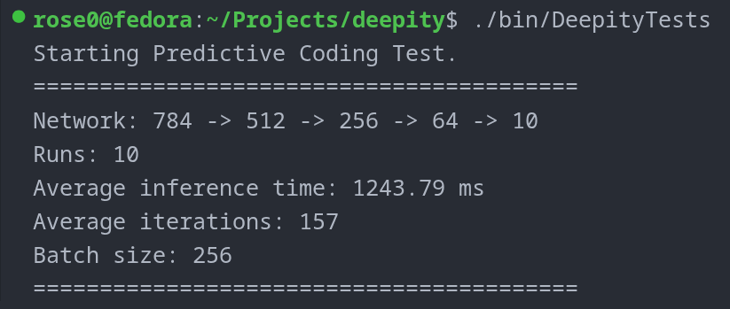
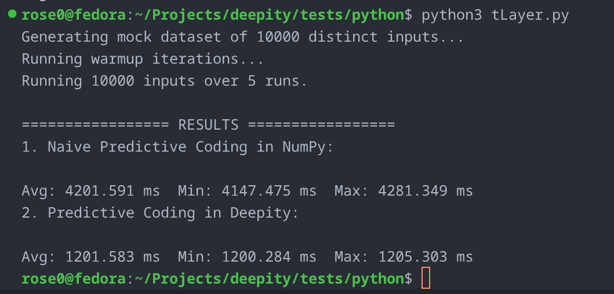
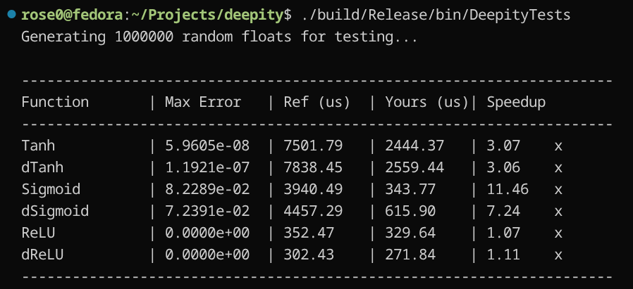

|
Deepity
Ultra-low variance Predictive Coding engine
|
|
Deepity
Ultra-low variance Predictive Coding engine
|
Deepity is a Predictive Coding (PC) library engineered from the ground up for zero-overhead, ultra-low variance inference and learning. It is aggressively CPU-optimized to extract maximum throughput from modern hardware, with a CUDA backend currently in development.

Deepity is built for speed. On a Dell Inspiron 16 Plus 7620 (12th Gen Intel Core i7-12700H, 20 logical processors), the engine sustains approximately 123 GFLOPS during predictive-coding inference and learning when compiled with Clang (LLVM).
Benchmark Configuration:
The dominant computation consists of batched single-precision matrix multiplications (SGEMM), corresponding to roughly 144.4 GFLOPs of floating-point work:
$$ \frac{144.4 \text{ GFLOPs}}{1.175 \text{ s}} \approx 122.89 \text{ GFLOPS} $$
By utilizing native C++ extensions via pybind11, Deepity maintains this performance footprint in Python with negligible overhead—running significantly faster than an equivalent, highly vectorized NumPy implementation.

| Implementation | Avg (ms) | Min (ms) | Max (ms) |
|---|---|---|---|
| Deepity (Python/Clang) | 1169.1 | 1167.8 | 1172.5 |
| NumPy (Naive) | 4201.6 | 4147.5 | 4281.3 |
Note: High-level research frameworks routinely incur heavy penalties from Python execution and tensor abstractions. Deepity bypasses this by keeping the entire inference loop in native C++ memory.
Recent benchmarking indicates that compiling Deepity with Clang (LLVM) provides measurable speedups across core neural network workloads compared to GCC. Because Clang handles our heavily vectorized SIMD micro-kernels more efficiently, it is the officially recommended compiler for maximum throughput.
| Benchmark Workload (Size 128) | Deepity v2 (MemoryArena) | Deepity v1 (Legacy) |
|---|---|---|
| BM_Network_Inference | 11,245 ns | 44,791 ns |
| BM_Network_TrainSample | 12,988 ns | 38,094 ns |
| BM_Layer_UpdateWeights | 0.665 ns | 0.671 ns |
(Note: GCC retains a slight edge in linear derivative calculations and weight randomization, but Clang wins heavily in the primary training loop).
Deepity achieves its low-variance execution times through strict memory management and custom hardware intrinsics.
Custom SIMD Micro-Kernels We bypass standard C++ library bottlenecks by implementing highly optimized activation functions using raw AVX2 and AVX-512 intrinsics.
Rational Polynomial Tanh Deepity avoids expensive expf instruction calls by utilizing a highly tuned Padé rational polynomial approximation. This yields up to a 40% speedup over std::tanh without sacrificing necessary precision.

Saturated Vectorized ReLU The ReLU implementation processes up to 16 floats per clock cycle, completely saturating standard single-core RAM bandwidth limits (~15.8 GB/s).
Strict 64-Byte Alignment To prevent hardware exceptions and segmentation faults when loading wide 256-bit or 512-bit registers, Deepity enforces strict 64-byte memory boundaries (std::align_val_t{64}) for all internal sequential sub-buffers.
Contiguous Arena Allocator All layer buffers in a network are packed into a single contiguous memory block. This maximizes L1/L2 cache locality and eliminates pointer-chasing overhead across the layer hierarchy.
During development, we benchmarked several architectural approaches to find the absolute ceiling for CPU throughput.
Batching provides massive scaling. A batch size of 256 proved to be the sweet spot for maximizing CPU utilization before cache eviction penalties take over.
| Batch Size | Time (ms) |
|---|---|
| 1 (None) | 4484 |
| 16 | 3149 |
| 64 | 2338 |
| 256 | 2233 |
| 512 | 2265 |
During the implementation of OpenMP and OpenBLAS multithreading, benchmarking revealed a severe performance trap: oversubscription and thread spin-up overhead. For smaller batch sizes, the CPU spent more time waking up threads and managing locks than performing the actual matrix math, causing multi-threaded runs to perform worse than single-threaded execution.
By sweeping the batch sizes, we identified the exact mathematical break-even point where matrix payloads outgrow OS thread latency.
| Batch Size | Threads | Throughput (Items/sec) | Verdict |
|---|---|---|---|
| 16-256 | 1 | ~2.6k | Single-thread dominates |
| 16-256 | 4 | ~2.5k | Multithreading penalizes performance |
| 1024 | Max | **~11.7k** | The Ignition Point (4.5x Speedup) |
| 16384 | Max | ~14.3k | Peak multi-threaded scaling |
Packing all layer attributes into a single flat array showed zero performance penalty over separate heap allocations, while providing vastly simpler alignment guarantees and predictable cache behavior.
| Layout | Time (ms) |
|---|---|
| Separate vectors | 4481 |
| Contiguous block | 4484 |
We tested OpenRAND against the standard std::mt19937 generator. Because the results were within a 5% margin of error, we opted for the standard library MT implementation to minimize external dependencies.
Running a Predictive Coding network in Deepity is built to be straightforward and explicit. The DiscriminativePCNetwork abstraction automatically manages layer hierarchies, bidirectionality, and dynamic thread scaling based on batch size.
plaintext includes/ # Public headers (PCLayer.h, PCNetwork.h, Activations.h) src/ # C++ source (PCLayer.cpp, PCNetwork.cpp) pybind/ # Python bindings (binding.cpp) tests/ # C++ and Python test suites bin/ # Build outputs (library, executables, Python .so) resources/ # Images and benchmark assets ```
Ra4ster (Jack R) @ 2026 ❤️